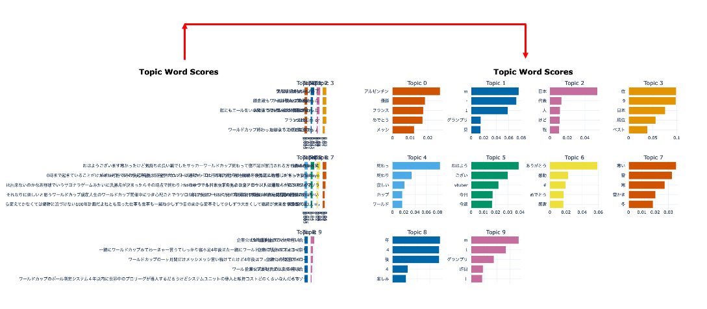

Project No.3
A notable trend among BERTopic usage examples is that they primarily focus on English language texts.
This is because the English language typically employs spaces to separate individual words, making it easier for BERTopic to analyze the text.
However, languages like Chinese and Japanese use a different system to denote word boundaries, which can pose significant challenges when using BERTopic for topic modeling.
In this project, I highlight these disparities and showcase the impact of using a tokenizer when analyzing Japanese texts for topic modeling with BERTopic.
By comparing the results generated with and without a tokenizer, I illustrate how tokenization significantly affects the outcome of topic modeling, particularly in languages like Japanese where proper segmentation of words is crucial.
A Visualization Sample
